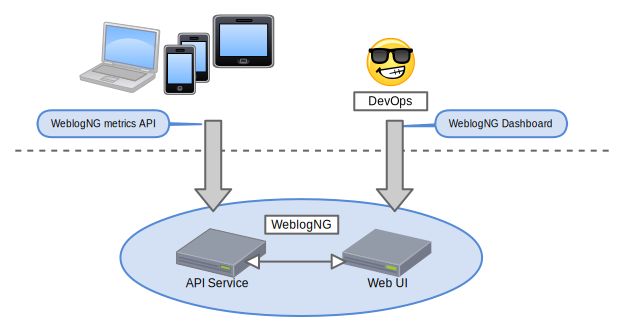

WeblogNG helps you instrument, capture, aggregate, and visualize your application's performance.
WeblogNG is not (currently)
a monitoring system
a profiler
a general purpose logging system for, e.g. errors, warnings, info
system architecture

instrument
function present_instrument_slide(){
var metricName = "slide-instrument"
logger.recordStart(metricName)
//... talk about instrumentation ...
logger.recordFinishAndSendMetric(metricName)
}
objectives of the api
simple
intentional
lightweight
instrument interesting things
“capture the metrics you're likely to need to debug problems in production”
-- Captain Obvious
interactions with other systems
size of collections
time in queue
known critical sections of the application
capture
WeblogNG client libraries send a stream of metrics recorded in your application to WeblogNG servers via http or websockets
The metric stream is captured by the WeblogNG servers and stored
aggregate
Each minute, WeblogNG examines the raw stream of values for each metric name
computes basic statistics for the new data points
median
p95
p99
updates the long-term metric storage for that minute with the computed values, making them available for in charts